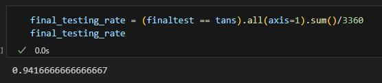

Prediction - Project5
This is a project for DSC80 where we clean and perform machine learnings to find predictions of specific data.
Name(s): Ruhua Pan
Introduction:
This time I choose to pick the topic: To Predict which role (top-lane, jungle, support, etc.) a player played given their post-game data.
I'm out of any sense of creativity - I'll admit that.
I decided to use data from the very first few leagues only and from the same patch. I've decided to train the model on the top 9 leagues, exclusively because matches might get very different in competitive and non-competitive leagues. Besides, we'll use complete games only.
Let's do the data cleaning then:
Data Cleaning
We first select the wanted rows use data in 'league', and then keep only'position', 'kills', 'deaths', 'assists', 'teamkills', 'teamdeaths', 'damageshare', 'visionscore', 'damagetakenperminute', 'damagemitigatedperminute', 'minionkills', 'firstblood', and 'earnedgoldshare'. I decided to keep as many as possible data in a proportion fashion, because we are mostly focusing about differences inside a team, so that the win/lost result doesnt affect that much. Here I use kills/teamkills and deaths/teamdeaths as killshare and deathshare. After that, we need to get rid of all team data because we focus on players.
We will then one-hot code the position column and seperate it into 5 different columns with possibilities. That makes our analysis rather be "estimate the possibility a player playing 'top', and do that for all 5 positions.
Descriptions of Columns:
damageshare: a float indicating how much damage a player has done out of the whole team.
visionscore: A score used to calculate a player's vision. Used Mainly to identify supports.
damagetakenperminute: a float used to show a player's damage taken. Top & jungle have higher damage taken.
damagemitigatedperminute: a float shows a player's damage mitigated per minute.
earnedgoldshare: shows how much out of a proportion a player earns gold. Higher for mid & ADCs.
minionkills: # of minions a player kills. Used to identify jungles.
xpat10: Used to seperate mid & bot lane.
killshare: proportion of a player's kill
deathshare: proportion of a player's death
assistshare: proportion of a player's assist
Eventually, we take the first 20000 rows in the dataframe as the training data, and the rest as testing data.
Baseline Model
We first implement a baseline model using only part of the features. I used KDA only for this model as they are the most common data used when we think about League of Legends performance.
No function transformer is implemented in this case since we only have quantitive data, and are all on a range from 0 to 1. For the baseline model, we use the very basic linear regression.
We then use this pipeline to predict the traning and testing data.
Since we've one-hot coded the positions, in this case I'll use the highest percentage in each column as a '1' (final guess), and the rest of the percentages are all 0. Here are the final outcomes of the data accuracy:
Note that I've used #correct guess out of all guesses as a measurement of accuracy, because we don't have a true/false scale in this 5-feature prediction.
40% is not very better from pure guessing. The model is not performing well, therefore we need to improve the model.
Final Model
To make improvement to the model, the first thing we do is to apply more features - we then implement every feature in the dataframe.
The reason for my column choices are because bot & mid does more damage, makes more gold, while top & jng takes and mitigates more damage. To identify support, I added visionscore, and I added minionkills to identify top and jng, and xpat10 to identify bot and mid, as bot shares exp with support thus wil have a lower xpat10.
I then applied sigmoid function to all data that does not range from 0 to 1, so that they would not have too big variations.
I've also changed the model from basic LR to a decision tree, so that we can have hyperparemeters.
Because we actually carry out the prediction 5 times, we use a GridSearchCV obj to identify the best parameters for EACH model. Here is one of the 5 set of parameters:

We make a model based on these meters after that (5 models, actuallly). After the model is being made, we use these pipelines to predict both the training set and the testing set.
And here are our results from both of them:
94% sounds like an acceptable correctness rate. The model has indeed been better trained. Progress has been made!
Fairness Analysis
For the sake of the fairness of the model, I would like to test if it works fairly on all professional games or if only on games inside relatively more competitive leagues. (let's say, LPL, LCK, LEC, LCS only.)
Therefore, the hypothesis are:
H0: The model is fair. It works on LPL, LCK, LEC & LCS equally good or not so good as with the others.
H1: The model is not fair. It is better at computing more competitive leagues(since we've trained the data on that).
Two groups are:
1. Game entries from the 4 leagues
2. All entries that are games not from these 4 leagues.
We choose the standard alpha = 0.05. Firstly, we calculate the observed statistic by calculating the model's performance on the 2 groups and calculate the difference.
After that, we shuffle the league column, and test out the model's performance on the 2 groups and calculate the difference, then shuffle the column again. Loop this for 100 times.
Here's the result that we get
We then calculate the p value, calculating how much percentage of collected data are beyond our observed statistic.
With the p-value of 0.41, we fail to reject the null hypothesis at a significant level of alpha = 0.05.
Therefore, we can conclude that there isn't a statistical evidence showing that the model is not fair regarding testing on less competitive or more competitive leagues.